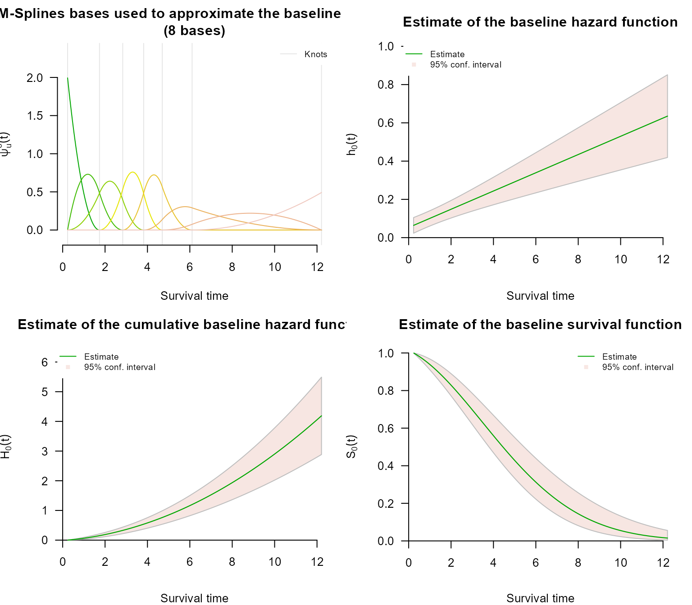
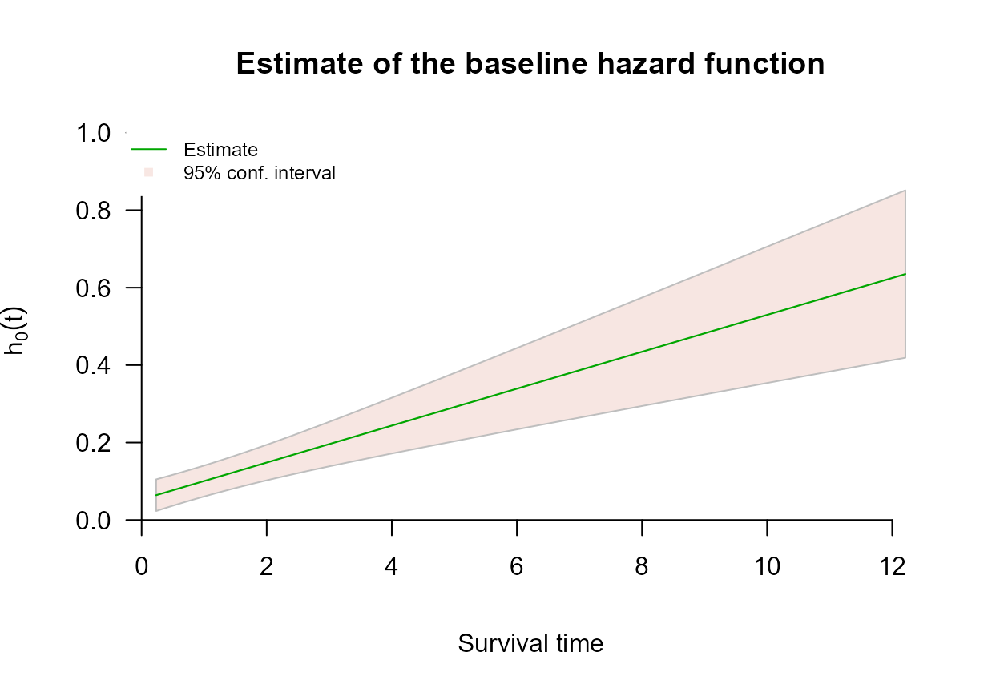
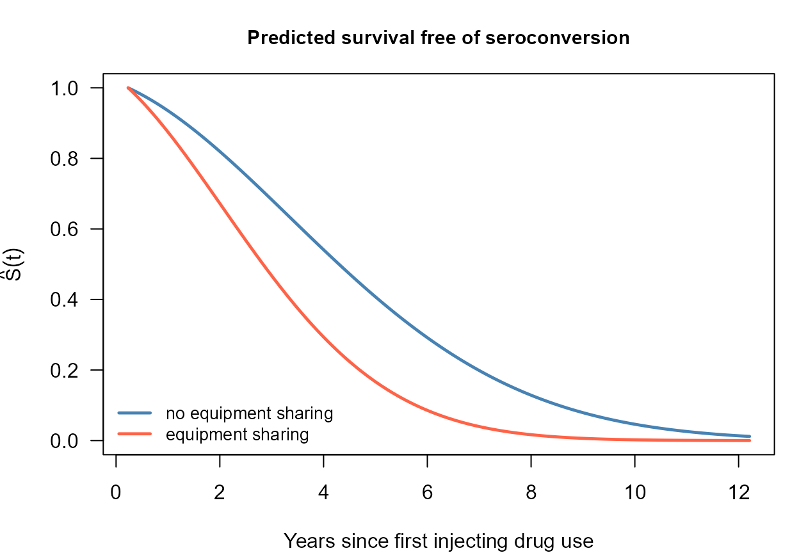

Left Censoring with survivalMPL
left-censoring.RmdOverview
A survival time is left censored when the event is known to have happened already by the time the subject is first examined, but not when. All that is recorded is an upper bound : the event occurred somewhere in . This arises whenever the outcome is detected by inspection rather than observed as it happens - a tumour already present at the first scan, seroconversion already complete at enrolment, a milestone already reached at the first assessment.
The likelihood contribution is the distribution function rather than the survivor function,
which the partial likelihood cannot accommodate: it needs a risk set
at a known event time, and a left-censored subject supplies neither.
Because coxph_mpl() estimates
explicitly, left-censored observations enter the likelihood directly,
and may be mixed freely with exact events and right- and
interval-censored observations in the same fit.
Encoding left-censored observations
Left censoring uses the type = "interval2" response,
with NA in place of the unknown lower endpoint:
library(survivalMPL)
#> Loading required package: survival
#> Loading required package: MASS
library(survival)
Surv(c(NA, 2, 3, 5), c(7, 4, NA, 5), type = "interval2")
#> [1] 7- [2, 4] 3+ 5The four observations above are, in order: left censored at 7
(7-), interval censored on
,
right censored at 3 (3+), and an exact event at 5.
Surv() records the distinction in its status code, and
coxph_mpl() dispatches on that code:
s <- Surv(c(NA, 2, 3, 5), c(7, 4, NA, 5), type = "interval2")
data.frame(status = s[, 3],
meaning = c("left censored", "interval censored",
"right censored", "exact event"))
#> status meaning
#> 1 2 left censored
#> 2 3 interval censored
#> 3 0 right censored
#> 4 1 exact eventNote that NA here is information, not
missingness: these rows are kept, not dropped by
na.action.
Recording a left-censored observation as NA and
recording it as the interval
describe the same event, since
makes
and
identical. Both encodings are accepted; the NA form is the
one that states the intent.
Example: HIV seroconversion
The bundled hiv data are entirely synthetic - there is
no real cohort behind them, and the coefficients are chosen for
illustration rather than estimated from any study. The design imitates a
cohort of people who inject drugs, followed for HIV seroconversion, with
time measured in years from the start of injecting drug use. The
observation scheme is what makes it useful here: each subject has a
first HIV test some time after that origin, and
- a subject already seropositive at the first test seroconverted somewhere in - left censored;
- a subject negative at the first test is retested frequently, so a later seroconversion is recorded as an exact event;
- a subject still negative when follow-up ends is right censored.
No subject is interval censored, so this is left censoring on its own rather than as a special case of something more general.
data(hiv)
str(hiv)
#> 'data.frame': 300 obs. of 6 variables:
#> $ t_L : num 3.74 5.76 NA 3.15 4.48 ...
#> $ t_R : num 3.74 NA 5.01 3.15 NA ...
#> $ Sharing : int 0 0 0 0 0 1 0 0 1 0 ...
#> $ Prison : int 0 0 1 0 0 0 1 0 0 0 ...
#> $ Female : int 0 1 0 0 0 0 1 1 1 1 ...
#> $ Age_centred: num -1.156 1.354 -0.963 1.361 1.009 ...
table(status = Surv(hiv$t_L, hiv$t_R, type = "interval2")[, 3])
#> status
#> 0 1 2
#> 87 117 96Status 2 marks the left-censored rows (96 subjects, just
under a third of the sample), status 1 the exact events and
status 0 the right-censored rows. The left-censored
subjects are the ones with no lower bound at all:
head(hiv[is.na(hiv$t_L), ])
#> t_L t_R Sharing Prison Female Age_centred
#> 3 NA 5.013339 0 1 0 -0.96307722
#> 7 NA 1.502960 0 1 1 -0.10064946
#> 9 NA 6.955977 1 0 1 -1.30025951
#> 10 NA 3.800657 0 0 1 -1.46512156
#> 12 NA 4.214666 0 0 1 -0.07477049
#> 14 NA 2.999568 1 0 0 0.13789375Model fit
is evaluated at
for every left-censored subject, so the shape of the baseline matters
more here than it does for right-censored data, where the likelihood
only ever looks at the hazard at the event times. That argues for a
smooth basis: basis = "msplines". The knot count is set
with n.knots: a third of this sample contributes only an
upper bound, which is not enough information to support the default knot
sequence, so six quantile knots are used instead. Everything else,
including the automatic selection of the smoothing value, is left at its
default - see Control Parameters.
fit_hiv <- coxph_mpl(
Surv(t_L, t_R, type = "interval2") ~ Sharing + Prison + Female + Age_centred,
data = hiv,
basis = "msplines",
n.knots = c(5, 0)
)
summary(fit_hiv)
#>
#> coxph_mpl(formula = Surv(t_L, t_R, type = "interval2") ~ Sharing +
#> Prison + Female + Age_centred, data = hiv, basis = "msplines",
#> n.knots = c(5, 0))
#>
#> -----
#>
#> Cox Proportional Hazards Model Fit Using MPL
#>
#>
#> Penalized log-likelihood : -367.2072
#> Estimated smoothing value : 73126132793
#> Convergence : Yes (10 + 9835 iter.)
#>
#> Data : hiv
#> Number of obs. : 300
#> Number of events : 117 (39%)
#> Number of cens. : 183 (61%)
#>
#> Regression parameters : Surv(t_L, t_R, type = "interval2") ~ Sharing + Prison + Female + Age_centred
#> Estimate Std. Error z-value Pr(>|z|)
#> Sharing 0.745158 0.137083 5.4358 5.455e-08 ***
#> Prison 0.415050 0.150917 2.7502 0.005956 **
#> Female -0.195567 0.143116 -1.3665 0.171785
#> Age_centred -0.049964 0.093632 -0.5336 0.593605
#> ---
#> Signif. codes: 0 '***' 0.001 '**' 0.01 '*' 0.05 '.' 0.1 ' ' 1
#>
#> Baseline hasard parameters approximated using M-Splines :
#> (2 (min/max) + 5 quantile knots + 0 equally spaced knots + 3 (order) - 2 = 8 parameters)
#> 1 2 3 4 5 6 7
#> 0.03215103 0.08667359 0.19381915 0.20894848 0.27941727 0.86836519 1.22610399
#> 8
#> 1.29240590
#>
#> -----The data were generated with true coefficients
for Sharing,
for Prison,
for Female and
for Age_centred, so the fit can be checked against the
truth:
truth <- c(Sharing = 0.90, Prison = 0.45, Female = -0.25, Age_centred = -0.15)
round(cbind(estimate = coef(fit_hiv),
SE = fit_hiv$se$Beta$M2HM2,
true = truth), 3)
#> estimate SE true
#> Sharing 0.745 0.149 0.90
#> Prison 0.415 0.159 0.45
#> Female -0.196 0.151 -0.25
#> Age_centred -0.050 0.093 -0.15Baseline hazard and survival

The four panels are the M-spline basis functions, then the estimated baseline hazard, cumulative hazard and survival. The hazard panel is the one to read first: the true baseline is Weibull with shape 1.5, an increasing hazard, and the estimate reproduces that rise. The confidence band is wide, which is honest - a left-censored subject contributes only the statement that the event happened at some point before , so a third of this sample carries very little information about when.
plot(fit_hiv, which = 2, ask = FALSE, cex.main = 0.9)
Predicted survival
Because is estimated, survival can be predicted for a named covariate profile rather than only compared between profiles. Here are two subjects who differ in the strongest covariate:
i_share <- which(hiv$Sharing == 1)[1]
i_no_share <- which(hiv$Sharing == 0)[1]
p1 <- predict(fit_hiv, type = "survival", i = i_share)
p0 <- predict(fit_hiv, type = "survival", i = i_no_share)
par(mar = c(4, 4.2, 3, 1))
plot(p0$time, p0$survival, type = "l", col = "steelblue", lwd = 2.4,
ylim = c(0, 1), xlab = "Years since first injecting drug use",
ylab = expression(hat(S)(t)), las = 1,
main = "Predicted survival free of seroconversion", cex.main = 0.95)
lines(p1$time, p1$survival, col = "tomato", lwd = 2.4)
legend("bottomleft", legend = c("no equipment sharing", "equipment sharing"),
col = c("steelblue", "tomato"), lwd = 2.4, bty = "n", cex = 0.85)
Next steps
- Interval Censoring covers the general partly interval-censored case, of which left censoring is the boundary instance, and uses a dataset containing all four observation types at once.
-
Right Censoring covers the standard scheme and the
Surv(time, status)response. -
Control Parameters explains
n.knots,basisandsmooth, the settings that decide how much structure the baseline hazard is allowed to have. - Basis Functions for the Baseline Hazard explains the choice of ; because enters the left-censored likelihood directly, that choice matters more here than for right-censored data alone.